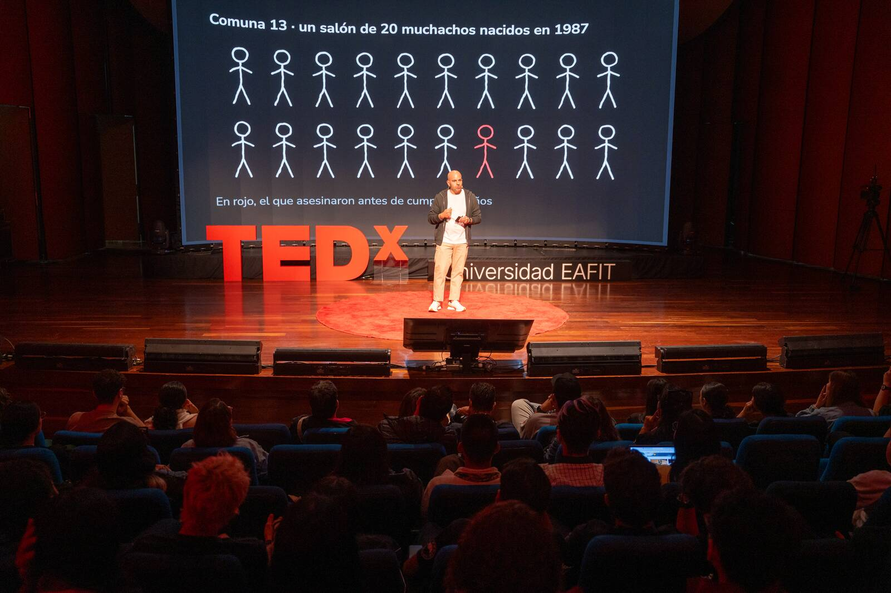

Santiago Tobón
Estudio cómo opera el crimen organizado, cómo los grupos criminales gobiernan comunidades y extraen recursos, y qué pueden hacer los gobiernos al respecto. La mayor parte de mi trabajo de campo se desarrolla en ciudades colombianas, donde hago experimentos y recojo datos originales.
Profesor de Economía, Universidad EAFIT · Director, Centro de Valor Público · Presidente, AL CAPONE

Reciente
- nov. 2026Organized Crime and Violence, aceptado en el Annual Review of Economics
- nov. 2026State-Building in the City, publicado en el American Political Science Review 120(4)
- oct. 2026Organized Crime as Urban Governance, capítulo en un compendio de Peace in Our Cities

Investigación
Gobernanza criminal, policía, cárceles y mercados ilícitos. Artículos en el Review of Economic Studies, el American Political Science Review, el Review of Economics and Statistics y el Journal of the European Economic Association, entre otras revistas.
Publicaciones y documentos de trabajo →Próximo libro · Penguin Random House, 2027
COCAÍNA: Anatomía de un mercado prohibido
El libro sigue un gramo de cocaína por cada eslabón del negocio: cultivo, procesamiento, tráfico, venta al menudeo y lavado de activos. Muestra cómo la prohibición define las reglas de ese negocio y por qué cada ofensiva favorece a las organizaciones más capaces de ejercer violencia y comprar autoridades.
Sobre el libro →Valor Público
El centro de investigación aplicada en política pública de EAFIT, que dirijo. Diseñamos y evaluamos programas públicos con gobiernos, entre ellos una secuencia anual de experimentos de salud mental juvenil con la Secretaría de Juventud de Medellín.
Proyectos →Escritos
Notas de política e informes, columnas en El Colombiano y La Silla Vacía, textos en VoxDev y Nada es Gratis, y cobertura de prensa de mi investigación, incluido The Economist.
Escritos y medios →